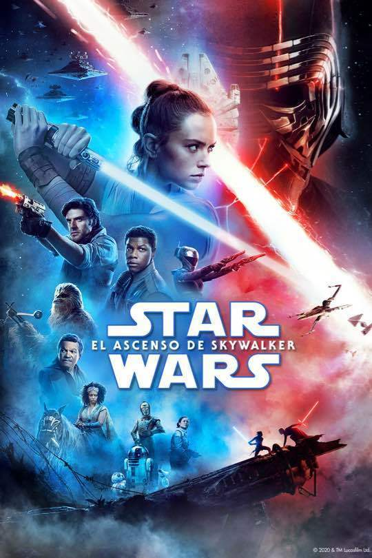

Star Wars Episodio IX: El Ascenso de Skywalker.
Hace mucho tiempo en una galaxia muy, muy lejana... ¡Los muertos hablan! La galaxia ha escuchado una emisión misteriosa, una amenaza de VENGANZA en la siniestra voz del difunto EMPERADOR PALPATINE.
Descripción:
Un año después de los eventos de Los últimos Jedi, tras recibir una transmisión proveniente del difunto Emperador Palpatine clamando venganza, el Líder Supremo Kylo Ren aparece atacando junto con algunas de sus tropas de la Primera Orden y mata despiadadamente a varios de los habitantes del planeta Mustafar en una campaña de búsqueda.